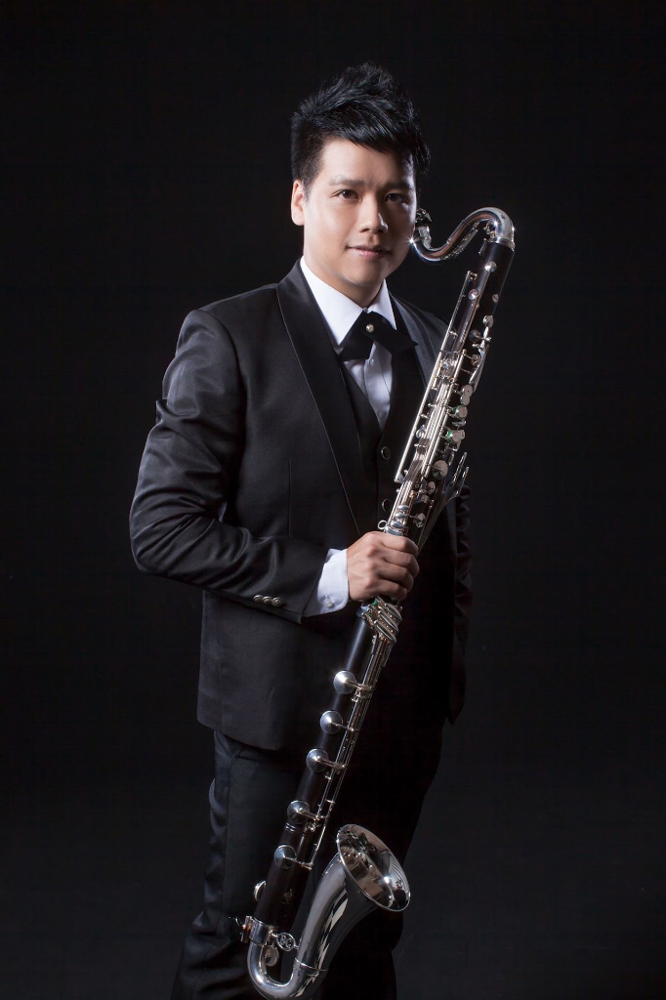

Conductor

2008 年以「全體評審一致通過且祝賀」取得法國國立佛漢 (FRESNES) 音樂院單簧管高級演奏文憑、以及法國巴黎師範音樂院室內樂高級演奏文憑，此成績為該校最高榮譽。
隨後考入法國國立 Creteil 音樂院，師隨巴黎交響樂團低音單簧管首席 Philippe-Olivier Devaux 學習低音單簧管。2011 年贏得法國 (Velizy-Villacoublay) 國際單簧管比賽第二名、法國貝隆 (Leopold-Bellan) 國際比賽室內樂卓越級 (Excellence) 第二獎。
陳威廷老師現任職於台北市立交響樂團附設管樂團低音單簧管演奏家，並於 2014 年 6 月考取英國歌劇魅影交響樂團單簧管首席兼低音單簧管在臺演出一職。
目前致力於深耕管樂教育，任教於忠信高中、新竹高中、建華國中、新竹國小、東門國小、竹南國中、竹南國小、苗栗公館國中、國小等多所音樂班單簧管兼任教師。並於桃園陽明高中、新豐忠信高中、竹北仁愛國中與竹北成功國中擔任管樂團分部指導。